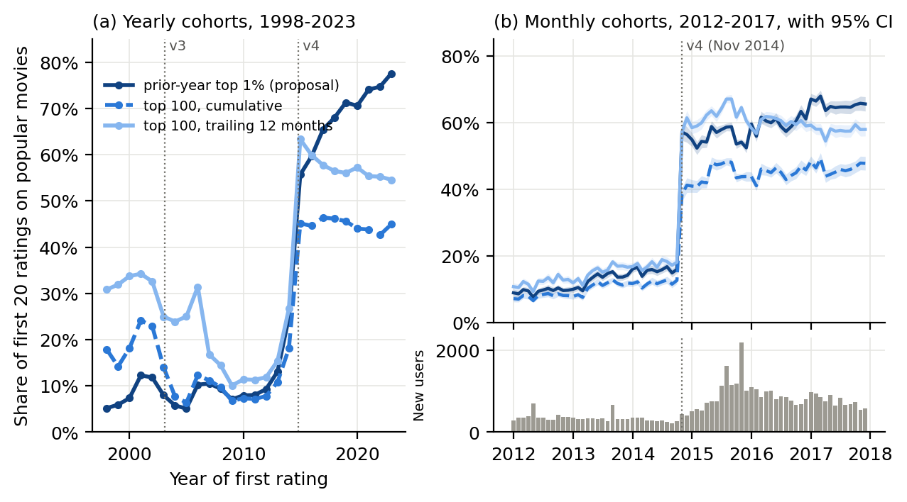
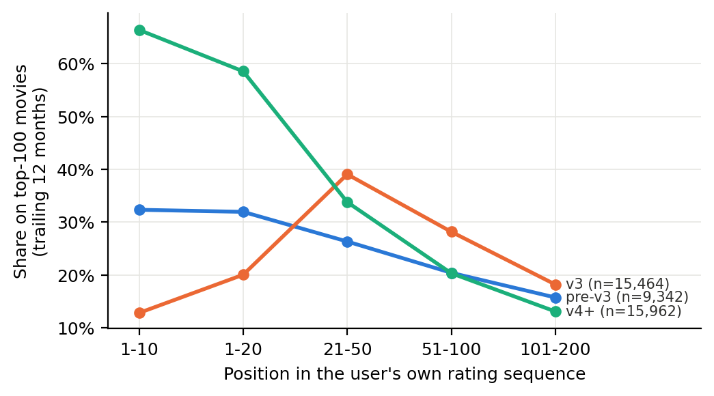
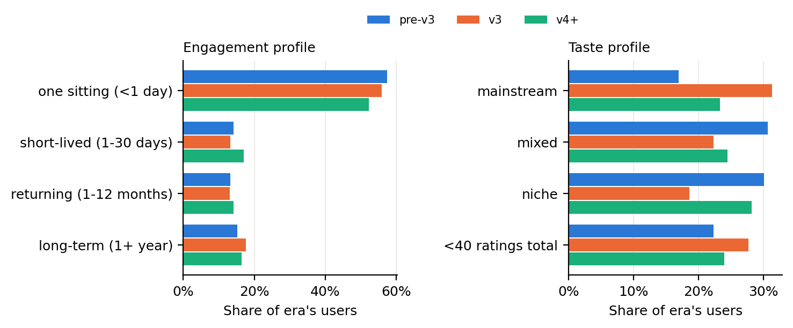
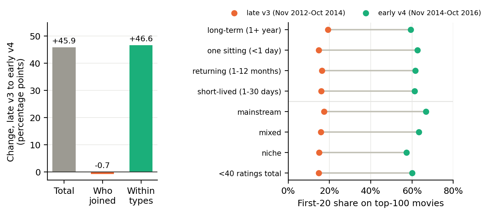
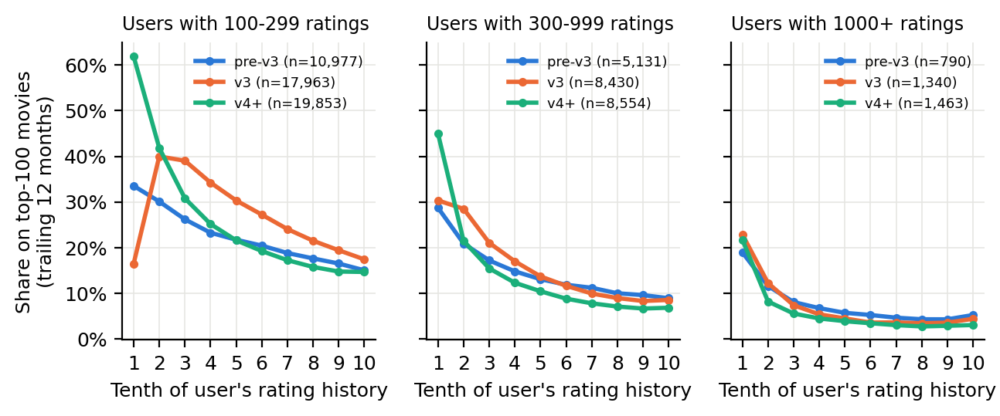

Direction (refined after proposal feedback). Our proposal found that users who joined around MovieLens v4 (Nov 2014) put far more of their first ratings on already-popular movies. Feedback asked us to explain this through users: who they are, where they come from, and how they change. Our question is now: What behavioral types of users join MovieLens, how does their taste evolve the longer they stay, and did the v4 redesign change which users joined or how similar users behaved?
Where users come from. MovieLens was built in 1997 by GroupLens after DEC closed its EachMovie recommender. DEC's anonymized data seeded the algorithm, but user accounts were not transferred. Growth was organic, with a "nearly total absence of marketing efforts". The site averaged 20–30 sign-ups a day, "largely the result of word-of-mouth or unsolicited press", and media coverage in late 1999 (the New Yorker, ABC's Nightline, Roger Ebert) produced a spike (Harper & Konstan 2015, §2.1). Users were not recruited as study participants, although GroupLens ran experiments on the live site, such as sign-up strategies (Rashid et al. 2002) and tag-display A/B tests. We therefore see two selection stages: (1) self-selected film enthusiasts chose to join a public recommender, and (2) the 32M release is a random sample of users with ≥20 ratings. Visitors who left before 20 ratings are invisible to us, which matters because v4 removed the sign-up rating barrier.
Data. MovieLens 32M has 32,000,204 ratings (0.5–5 stars) and 2,000,072 tags from 200,948 anonymized users on 87,585 movies, January 1995 to October 2023. All four files match the published MD5 checksums. Each rating is (user, movie, stars, timestamp). Example: user 1 rated Being John Malkovich (1999; Comedy|Drama|Fantasy) 4.0 stars and The Straight Story 1.0 star at the same second, 1999-11-21 23:27:26 UTC. That is typical batch entry. There are no demographics, no logs of what the site displayed, and no viewing dates. The median user has 73 ratings and the median first session (ratings less than 30 minutes apart) has 47. 55% of users (91,251 of 166,550) entered every rating within a single day. The top 1% of movies receive 54.9% of all ratings. Our analysis sample is the 166,550 users whose first rating is from 1998 or later (35,717 pre-v3, 62,900 v3, 67,933 v4+); earlier timestamps conflict with the documented launch date.
Platform versions as testable hypotheses (history from Harper & Konstan 2015, §2.2). "Top-100 share" is the share of a user's ratings on the 100 movies rated most often in the previous 12 months (Finding 1).
| Era (users) | Documented onboarding and display | Hypothesis | What we observe (first 10 ratings, top-100 share) |
|---|---|---|---|
| v0–v2 Aug 1997–Feb 2003 (35,717) | Rate 5 movies to enter; movies shown 10 at a time, 9 random plus 1 hand-picked well-known title. Lists ordered by personal predicted rating. | Early ratings are broad, with a moderate popular share. | 32%: moderately popular; Return of the Jedi is in 19% of newcomers' first 10. |
| v3 Feb 2003–Nov 2014 (62,900) | Rate 15 movies to enter; movies "selected for their popularity, excluding the most popular 50–150". Half-star scale; item-item recommender. Member movie-adding from Sept 2008. | Sign-up ratings avoid the very top movies, then rise once users browse freely. | 13%, rising to 39% at ratings 21–50. The most common first-10 title (Shrek) reaches only 4.3% of newcomers. |
| v4 Nov 2014– (67,933) | No 15-rating barrier; group-based new-user process (Chang et al. 2015); a "popularity factor" blended into list ordering; TMDB metadata. | Early ratings concentrate on popular movies. | 66%. Shawshank Redemption is in 47% of newcomers' first 10, The Matrix in 41%. |
Since the proposal. The proposal reported that users starting in Oct 2014 placed 15.9% of their first 20 ratings on prior-year top-1% movies, compared with 57.1% for Nov 2014 starters. We reproduced this exactly. We then tested whether it depends on the popularity definition (Finding 1), justified and stress-tested the "first 20" window (Finding 2), built behavioral user profiles to separate who joined from how they behaved (Finding 3), and tracked taste over each user's full history (Finding 4).
| Member | Week of Oct 8–14 | Week of Oct 15–21 |
|---|---|---|
| Mohit Kumar | [FILL IN] | [FILL IN, e.g., popularity grid with no look-ahead; observation-window and lifecycle analyses] |
| Sikandar Ali | [FILL IN] | [FILL IN] |
| Min-Yi Chen | [FILL IN] | [FILL IN] |
Shared work this period: reproduced the proposal pipeline from a fresh download and fixed a bug that stopped it running from a clean clone; added src/checkpoint1.py (all numbers and figures in this document); reviewed Harper & Konstan (2015) and the two suggested papers.
Goal. Before explaining the jump, rule out the possibility that it comes from how we measured popularity. Method. For every month we computed each movie's popularity using only ratings entered before that month (no look-ahead), then classified every rating with three definitions: (M1) the proposal's measure, top 1% by cumulative count at the end of the previous year; (M2) top 100 by cumulative count; and (M3) top 100 by ratings in the previous 12 months ("currently popular"). M2 and M3 fix the number of movies, so they do not grow with the catalog. For each user we averaged the indicator over their first 20 ratings, then averaged across users with 95% confidence intervals.

| First-20 share on popular movies | pre-v3 | v3 | v4+ | Oct 2014 (n=267) | Nov 2014 (n=435) |
|---|---|---|---|---|---|
| M1: prior-year top 1% (proposal) | 8.6% | 8.6% | 66.1% | 15.9% | 57.1% |
| M2: top 100, cumulative | 19.1% | 8.9% | 44.9% | 12.6% | 38.4% |
| M3: top 100, previous 12 months (primary from here on) | 33.0% | 18.1% | 58.2% | 18.1% | 57.1% |
Output and interpretation. All three definitions jump within a single month at the documented v4 launch (Fig. 1b), and the era-level confidence intervals are ±0.2 percentage points. The shift is therefore not a measurement artifact. Stress tests. (i) Pre-trend: the share rose slowly from about 12% to 18% during 2012–2014, far smaller than the step. (ii) Catalog growth: after 2015, M1 keeps climbing (56% to 78%) while M2 and M3 stay flat or decline (Fig. 1a). The proposal measure's "top 1%" set grows with the catalog, so its post-2015 rise is partly an artifact; this is why we switch to M3. (iii) Matching identical values: the proposal's identical 8.58% for pre-v3 and v3 was a coincidence (8.583% vs. 8.581%). The fixed-size measures show pre-v3 users were more mainstream than v3 users. (iv) Open puzzle: within v3, M3 falls from 31% (2006) to 10% (2009). The history documents no onboarding change then, so we treat it as a question to resolve.
Goal. Explain the window. Every user in the release has at least 20 ratings, so the first 20 is the largest window observable for all users. It also stops heavy raters from dominating comparisons. It is not a control group, and it is not taste measured before exposure to MovieLens, because those ratings are entered on the sign-up screens. To test what the window captures, we compared windows across each user's rating sequence: ratings 1–10, 1–20, 21–50, 51–100 and 101–200, plus the first session. Method. To keep the comparison fair (following Danescu-Niculescu-Mizil et al. 2013), we used the same users in every window: those with ≥200 ratings (9,342 pre-v3, 15,464 v3, 15,962 v4+).

Output. v4 users start at 66% (ratings 1–10) and fall to 34% at ratings 21–50, then to 13% at 101–200, below v3 users (18%). v3 users show the reverse at the start: 13% in ratings 1–10, rising to 39% at 21–50. The first session gives 23% for pre-v3, 23% for v3 and 29% for v4 in this fixed sample, and 41% for v4 across all users, because v4 first sessions contain the sign-up ratings. Interpretation. The early window mirrors the documented sign-up design: v3 showed popular movies excluding the 50–150 most popular, and v4 pushed popularity up. Once users leave the sign-up screens, the era gap closes and even reverses. The first-20 window is therefore a good measure of the sign-up interface, but a poor measure of taste. For taste we will use ratings after the first 20. Stress test. The same pattern holds when each window uses all users who have that many ratings (v4: 66%, 58%, 35%, 22%, 15%).
Goal. Feedback asked whether different types of users explain the shift. Method. We defined two interpretable behavioral axes. These are behavioral profiles, not demographic or psychological types. Engagement is the time between a user's first and last rating: one sitting (<1 day), short-lived (1–30 days), returning (1–12 months) or long-term (1+ year). Later taste is the M3 share among ratings after the 20th, split at the pooled tertiles (16.4% and 28.5%) into mainstream, mixed and niche. Users with fewer than 40 ratings form a fourth group. We then compared late-v3 joiners (Nov 2012–Oct 2014, n=7,911) with early-v4 joiners (Nov 2014–Oct 2016, n=22,010). The change in first-20 share was split into a composition part (a different mix of the 16 profile cells) and a within-profile part (the same cells behaving differently), using a shift-share with average weights. The two parts sum exactly to the total.

Who the users are. The dominant type in every era is the one-sitting user (57% pre-v3, 56% v3, 52% v4+): a median of 52 ratings, almost all in one session, then no return. Long-term users are only 15–18% but much more active (median 278 ratings). Taste is tied to activity: niche users have a median of 265 ratings and the lowest mean rating (3.56 stars), while mainstream users have 77 ratings and rate more generously (3.85). The engagement mix is nearly stable across eras. Later taste shifts more: v3 has the most mainstream later raters (31%), and pre-v3 and v4 have more niche raters (30% and 28%).

Output and interpretation. The total change of +45.9 percentage points splits into −0.7 composition and +46.6 within-profile. Every profile, from one-sitting to long-term and from mainstream to niche, jumped from about 15–19% to 57–67% (Fig. 4, right). Even users who later become niche raters started v4 with 57% popular movies. The v4 shift is a change in how comparable users behaved at sign-up, consistent with the new interface, not an influx of different users. Stress tests and caveats. The split is the same under the proposal measure M1 (+43.5 = −0.1 + 43.6). Profiles are measured after joining, so v4 could in principle change who stays; the engagement mix moved little (one-sitting 56% to 52%), which limits that concern. Unobserved composition, such as referral source or demographics, cannot be ruled out. The number of sampled new users nearly tripled after v4, plausibly because v4 removed the 15-rating barrier and changed who reaches the 20-rating inclusion floor.
Goal. Ask how users change the longer they stay, using the lifecycle framework of Danescu-Niculescu-Mizil et al. (2013). Method. Following that paper, a user's life-stage is the fraction of their eventual ratings already entered. We split each user's sequence into 10 equal-count stages. Popularity (M3) is measured relative to that month's site, like the paper's month-by-month language model. To avoid mixing short and long careers (survivorship), we plot users with 100–299, 300–999 and 1,000+ ratings separately.

Output and interpretation. In every era and band, users move toward less popular movies as they continue. For users with 100–299 ratings, v4 starts at 62% and ends at 15%. v3 starts at 16% (the sign-up exclusion rule), peaks at 40% in the second tenth and ends at 17%. v4 users fall below v3 users by the third tenth and stay below. Heavy users (1,000+) converge to 3–5% regardless of era. The result is a two-stage pattern similar to the earlier paper: an early stage shaped by the interface, then a long drift toward the long tail that looks similar across eras. The platform change moved the starting point far more than the destination. Caveats. (i) Depletion: a user cannot rate the same movie twice, so some decline is mechanical once the top 100 have been rated; correcting for this is a next step. (ii) Early stages include retrospective batch entry of past viewing, not newly watched films. (iii) Later stages fall in years with larger catalogs.
| Data caveat | What it would bias | What we did or will do |
|---|---|---|
| ≥20-rating inclusion floor; v4 dropped the sign-up barrier | Cohort sizes and who "survives" sign-up are not comparable across eras | Compare rates within cohorts, not counts; profile mix shown explicitly (Fig. 3) |
| No logs of what was displayed | Cannot separate free choice from what the interface showed | Use documented onboarding rules as hypotheses (page 1 table); phrase results as associations |
| Timestamps record rating entry, not viewing | Time-based windows mix batch imports with new activity | Windows defined by rating order; first session reported separately |
| Catalog grows about 50× (1,674 rated movies in 1998 to 84,172 in 2023) | Percentile and "top 1%" measures drift upward | Fixed-size top-100 measures (M2, M3) as primary |
| Each movie rated at most once | Lifecycle decline partly mechanical | Depletion-corrected share (next step) |
| No demographics; recruitment through word of mouth or press | Unobserved composition shifts | Behavioral profiles only; "who joined" is limited to observed behavior |
Next analytical decision. We will make user taste over the lifecycle the core of the project, with v4 as a natural before/after contrast. Next we will (1) correct the lifecycle curves for depletion and (2) test whether early behavior predicts who stays, following Hamilton et al. (2017), separately for v3 and v4.